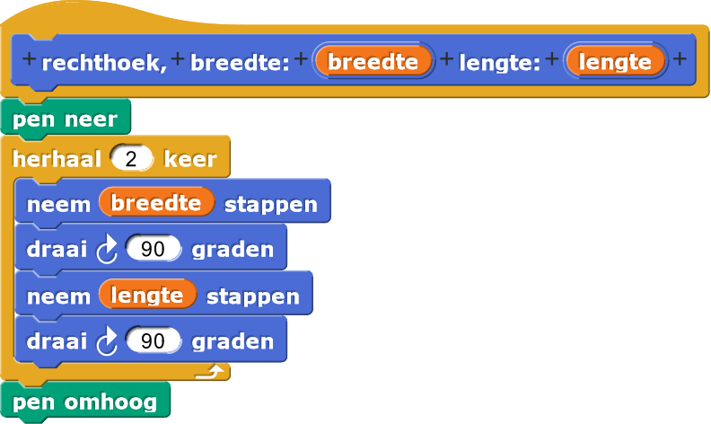
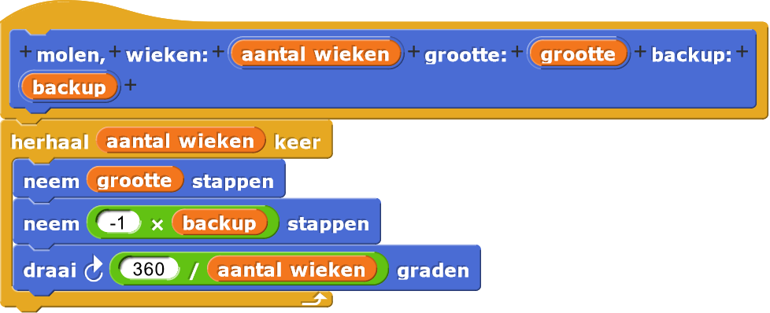
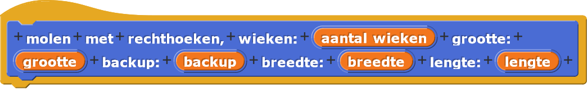
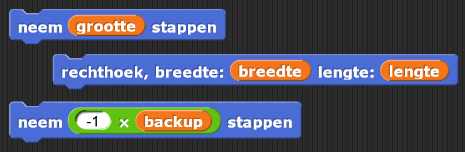
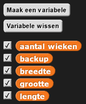
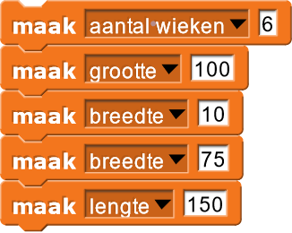
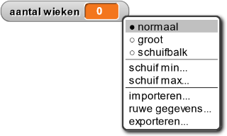
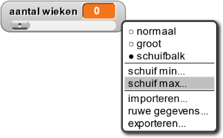
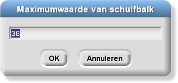

Egyptisch motief


Veel Islamitische kunst maakt gebruik van geometrische principes en simpele, herhalende patronen om ingewikkelde vormen te maken. Het Egyptische motief hierboven heeft bijvoorbeeld zes overlappende rechthoeken.
In dit project, ga je leren hoe je je molen code van Hoofdstuk 1 kan
uitbreiden om zulke ingewikkelde patronnen te maken.
-
In dit project, ga je herhaaldelijk rechthoeken gebruiken, dus bedenk hoe je ook al weer een
rechthoekblok maakt.
Zie je hoe wepen neer- enpen omhoogblokken gebruiken in hetrechthoekblok? Normaliter doen we dit niet, maar hier doen we dat om de ingewikkelde code die nog gaat komen, te simplificeren. Door die blokken weten we zeker dat zodra het blok getekend is, de pen omhoog is en je dus niet bezorgd hoeft te zijn over dat je per ongeluk extra lijnen tekent met code na hetrechthoekblok. -
Hieronder kan je ook weer even bekijken hoe het
molenblok werkt.
 -
In dit project ga je de molenwieken vervangen met
rechthoeken zoals hieronder. De kleuren die je ziet zijn optioneel en
worden hier alleen gebruikt voor de duidelijkheid.


Maak nu eenmolen met rechthoekenblok. Dit blok heeft twee extra invoeren: breedte en lengte voor de breedte en lengte van de rechthoek.

De code zal identiek zijn aan die van hetmolenblok, alleen zal je hetrechthoekblok plaatsen tussen de tweeneem stappenblokken die de molenwieken maakten.
 -
Gebruik nu het Variabelen-menu om variabelen te maken waarmee je de invoeren aan kan passen van je
ontwerpen. Vergeet niet om de variabelen te initialiseren na het
wanneer groene vlag wordt aangekliktblok
  -
Je kan deze variabelen veranderen in een schuifbalk door op het icoontje van de variabelen op het
speelveld met de rechtermuisknop te klikken en door daarna op "schuifbalk" te klikken. Je kan de
minimum en maximum waarden van de schuifbalk kiezen door met de rechtermuisknop op het icoontje te
klikken en daarna op de opties "schuif min" en "schuif max".
  
Onderstaande tabel bevat redelijke waardes voor de minimum en maximum waardes voor iedere variabele.
Je kan de minimum en maximum waardes zelf aanpassen terwijl je nieuwe ontwerpen aan het maken bent.Variabele Minimum Maximum aantal wieken 3 36 grootte 0 100 backup 0 100 breedte 0 150 lengte 0 150 -
Klik op de animatie hieronder om een voorbeeld te zien van hoe je de schuifbalk kan gebruiken in
Snap! om een enorme hoeveelheid aan verschillende ontwerpen te verkennen.
-
Je code moet er voor zorgen dat je computer altijd controleert of een van de variabelen een nieuwe
waarde heeft gekregen via de schuifbalk. Je kan dit doen met het
herhaalblok.
 Het
Hetwarpblok zorgt ervoor dat hetmolen met rechthoekenblok getekend wordt in één keer in plaats van stap voor stap. - Als je alle code geschreven hebt test dan of je code werkt naar verwachting. Je moet misschien de teken-sprite eerst in het midden van het speelveld zetten zodat je hele ontwerp getekend wordt. Verschuif nu de schuifbalken van de variabelen om variaties van Islamitische kunst te maken.
Gebruik deze knoppen om je speelveld zo groot mogelijk te maken zodat je plek hebt voor je sliders.

- Voeg kleur toe aan je rechthoeken door toe te
voegen na in
het
warpblok en toe te voegen in jemolen met rechthoeken-code.
-
Maak screenshots van je kunstwerken en deel ze met de klas. Zet ze op de website van je klas als je
die hebt. Hieronder staan wat voorbeelden van de creaties die je kan genereren.
Je wilt misschien gebruiken om de sprite te verbergen voordat je een screenshot maakt van je ontwerpen.